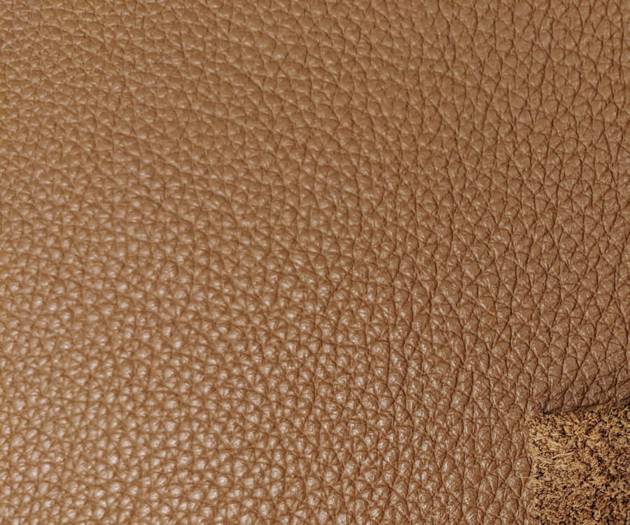
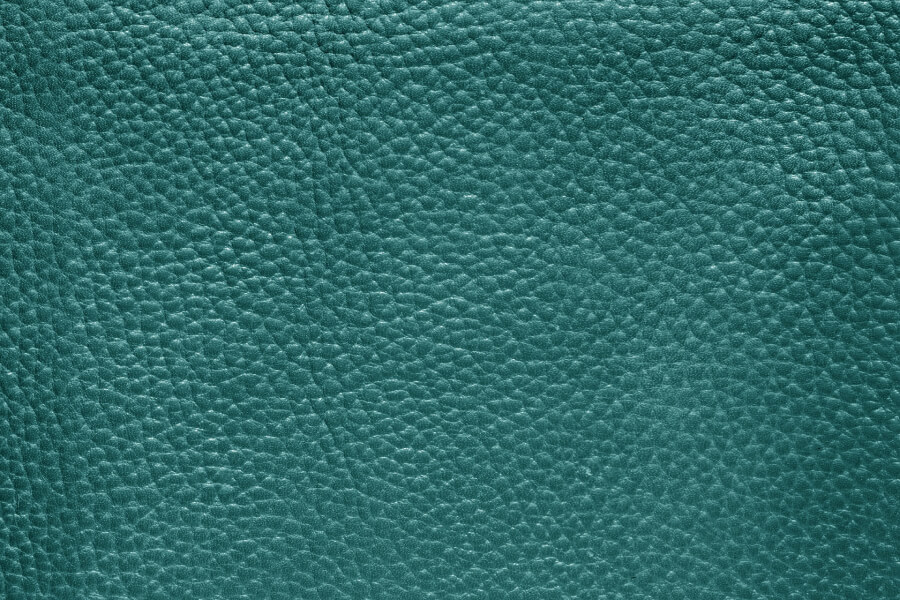
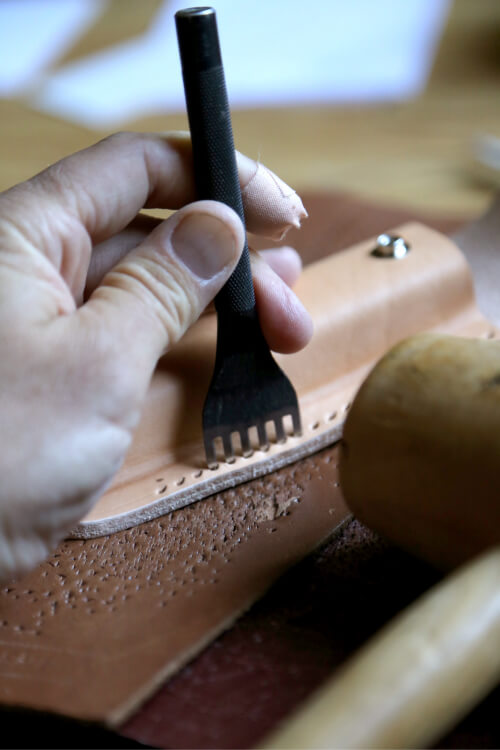
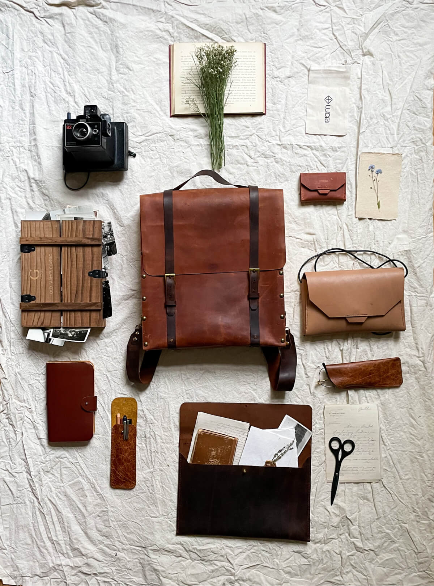

品牌理念
暖觸專注於打造皮革手工藝品以及提供客製化服務，我們相信手工製作的皮革產品擁有著獨特的溫度，不僅是一種產品，更是一種故事和情感的傳遞方式，每一個作品都有各自獨特的紋理、顏色與質地，並且會隨著時間推移而充滿韻味、更加美麗，產生觸動人心的感動，因此，讓暖觸與您一同打造出屬於自己和重要他人的特別禮物！！
皮
革
皮革是一種天然的高品質材料，具有柔軟、堅韌、耐久、美觀等特性，並且各自擁有獨特的紋路與色澤，適合客製化製作，打造專屬且獨一無二的皮革藝品

- 
- 

* 每張皮革都有各自的生命故事，表面紋路為自然現象，其狀況不影響皮革品質。
* 鞣製過程中會因物理化學作用產生些微色差，色卡顏色僅供參考。
Artical

-
工

作
坊 -
在繁忙且快速的生活節奏中，我們容易忽略了那些令人感動的細節，希望您參與我們的皮革工作坊，在手作的過程，重新發現手作的溫度、感動及感觸。您將會學習到如何打造獨一無二的皮革製品，指導您如何創造自己的設計，讓您能夠親手製作出一個完全符合自己風格和需求的皮革製品。
Workshop - 
產
品
暖觸提供各式各樣的皮革製品，包括背包、提袋、錢包、手機套等，不僅擁有高品質的材料與工藝，同時更注重細節與設計，讓您感受最真誠的溫暖與感動最真誠的溫暖與感動
Product